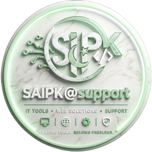

ContextOS runs silently on Windows and alerts you the moment something in one app conflicts with — or answers — something in another.
Free · Open source · 100% offline · Windows 7–11 · Python 3.12
Every app switch breaks your focus. You miss critical information sitting in another window. Nobody connects the dots — until now.
All four run silently. You never click anything. ContextOS speaks up only when it matters.
Even a 10-year-old laptop with 2GB RAM and Windows 7 gets full value from ContextOS. It auto-detects your hardware on first launch.
No account. No signup. No internet needed. Just Python and one command.
No account needed · No data collected · MIT License
Stop losing hours to context switching. Let ContextOS watch your apps and tell you what matters — before it costs you.